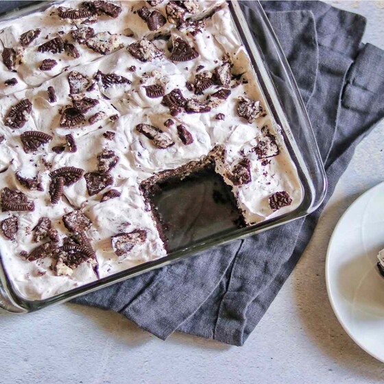

Overview
This indulgent yet straightforward dessert features a layer of rich, velvety topping and crushed cookies over soft and melted dark chocolate brownies with a crispy exterior. Make this for any occasion as a decadent dessert combining the classic brownie with an OREO twist!
| Prep Time: | Cook Time: | Cool Time: |
|---|---|---|
| 25 mins | 30 mins | 30 mins |
| Total Time: | Servings: | Yield: |
| 1 hr 25 mins | 16 | 16 brownies |
Directions
- Preheat the oven to 350 degrees F (175 degrees C). Grease a 9-inch square baking pan.
- Mix sugar, flour, cocoa powder, salt, and baking powder together in a mixing bowl.
- Whisk butter, eggs, and vanilla together in a separate bowl. Add butter mixture to the flour mixture and mix until well combined.
- Pour 1/2 of the batter into the prepared baking pan and smooth out with a spatula. Add 16 OREO® cookies in an even layer (4 rows of 4 cookies), then spread the remaining 1/2 of the batter over top.
- Bake in the preheated oven until edges are brown and center is set, 30 to 35 minutes.
- Remove pan from the oven and set on a wire rack. Let brownies cool completely, at least 30 minutes.
- Crush 12 of the remaining OREO® cookies. Place the whipped topping in a bowl and fold in the crushed cookies. Spread over the top of the brownies. Crush the remaining 4 cookies, then sprinkle over the top of the whipped cream mixture.
- Keep refrigerated until you are ready to slice and serve.
- All done!
Recipe Credits
The recipe here was taken from AllRecipes.com: Click here for the recipe. My webste was intended to showcase HTML/CSS skills, and NOT to copy the original recipe.